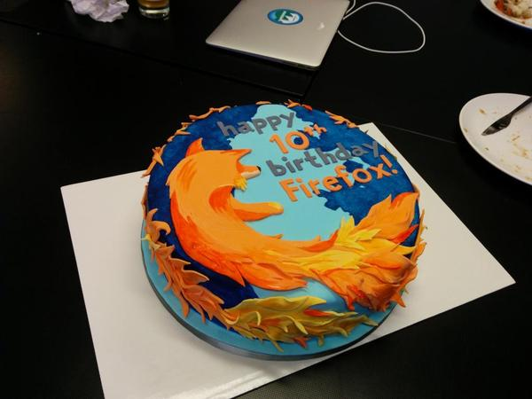
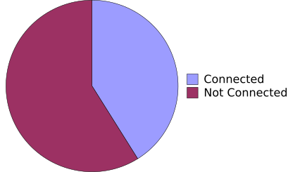
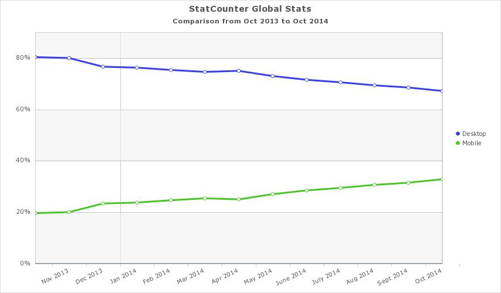
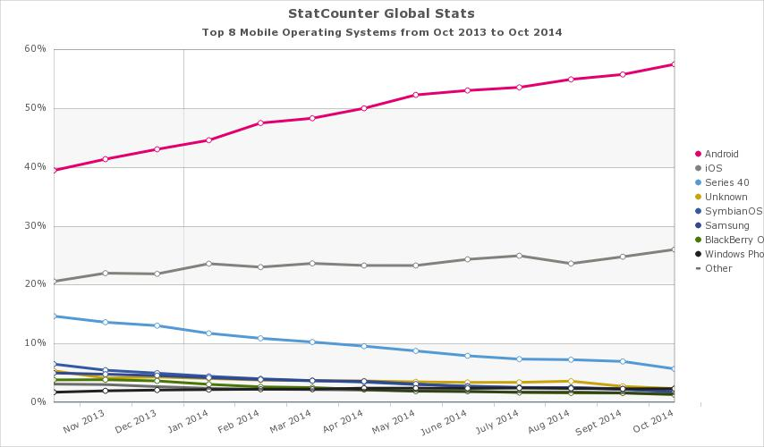
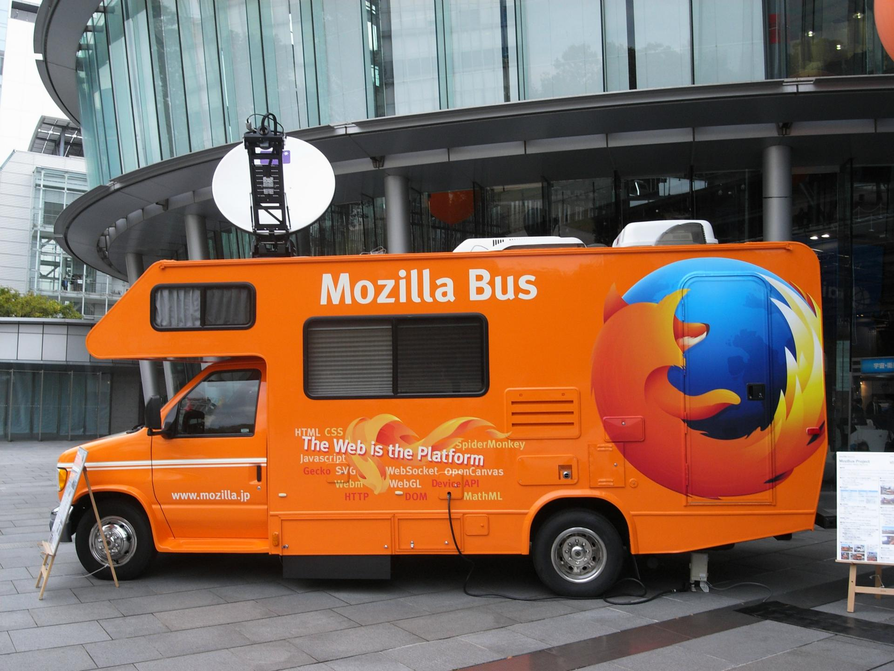
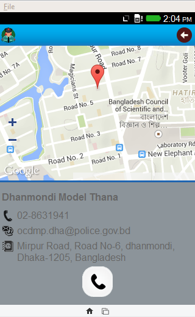
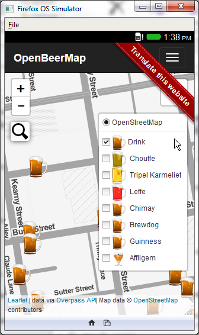

Mozilla
2014+
Ryan Kelly
rfkelly@mozilla.com
10 Years of Firefox

[https://twitter.com/canuckistani/status/533422281305776129]
Lots of Stuff
asmjs, polaris, lets-encrypt, the open standard, net neutrality, stumbler, etc etc...
Global Connectivity
- 3 billion citizens of the web connected
- World population: 7 billion

"Let's help connect the next billion people."
The World goes Mobile

[http://gs.statcounter.com/press/mobile-internet-usage-soars-by-67-perc]
"Let's help connect the next billion people to the web."
Firefox OS
- Built to be "of the web"
- Targetting feature-phone -> smartphone transition
- Targetting lower price points
Firefox OS Around the World
5 continents, 27 markets
[https://blog.mozilla.org/blog/2014/07/17/firefox-os-ecosystem-shows-strong-momentum-and-expands-across-new-devices-markets-and-categories/]
Marketshare?

[http://gs.statcounter.com/#mobile_os-ww-monthly-201310-201410]
Web Literacy
Open the Site?
[https://blog.mozilla.org/blog/2014/09/18/global-web-literacy-gets-a-boost-from-maker-party-2014/]

[http://mozbus-en.tumblr.com/]
"Let's help connect the next billion people to the web, as citizens."
Police Station Finder

[https://marketplace.firefox.com/app/police-station]
OpenBeerMap

[https://marketplace.firefox.com/app/openbeermap]
Get more people connected
- to the open web
- on their own terms
- as participants
Thank You
https://www.mozilla.org/
rfkelly@mozilla.com